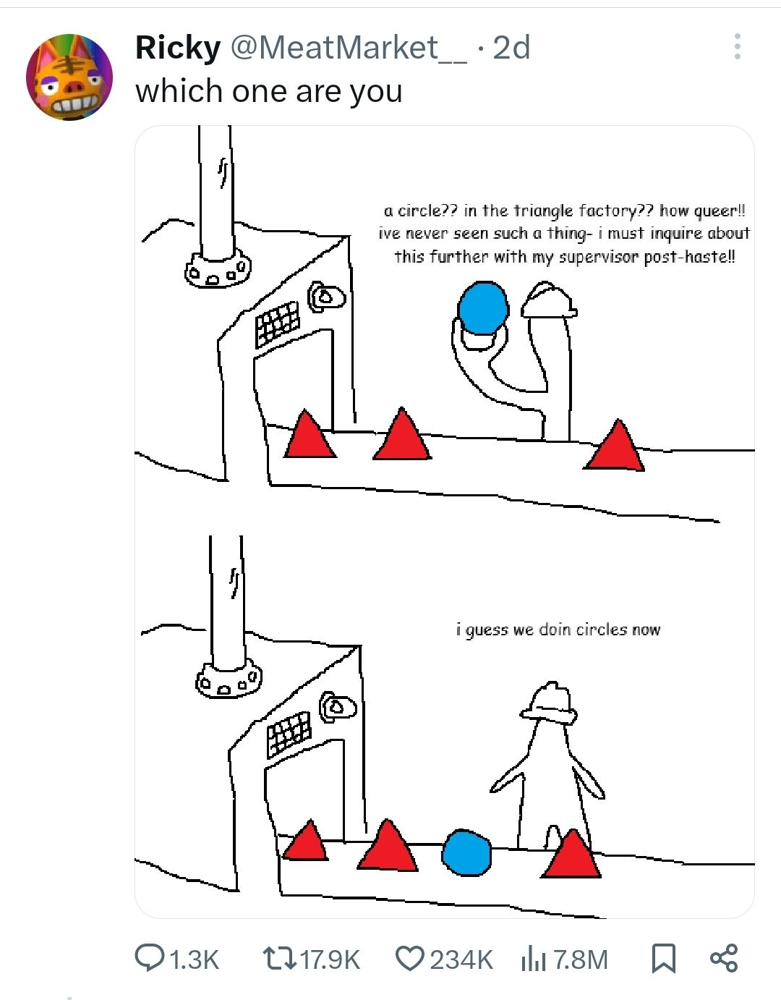

Урок 12. ООП
Повторяем и расширяем материал книги
У нас есть класс и экземпляр класса. Что из этого является чертежом, а что результатом, сделанным по чертежу?

Что такое атрибуты?
Что такое методы?
Что такое self и почему он все время передается первым аргументом в методе?
Зачем нужен метод __init__?
Что такое атрибуты класса, а что атрибуты экземпляра?
В примере ниже, где атрибут класса, а где экземпляра?
Будет ли ошибка если я выполню код:
А если такой код:
А этот:
class Dog:
name = 'Dog'
def __init__(self, name):
self.name = name
print(Dog.name)
sharik = Dog('Шарик')
print(sharik.name)
Как создается экземпляр класса?
Могу ли я поменять атрибут у экземпляра класса и/или добавить новый атрибут?
Что выведет этот код:
class Dog:
def __init__(self, name):
self.name = name
sharik = Dog('Шарик')
sharik.name = 'Бобик'
print(sharik.name)
А этот? Упадет ли он ошибку?
class Dog:
def __init__(self, name):
self.name = name
sharik = Dog('Шарик')
sharik.age = 8
print(sharik.age)
А этот?
class Dog:
def __init__(self, name):
self.name = name
sharik = Dog('Шарик')
# Удалил строку sharik.age = 8
print(sharik.age)
Что такое dunder метод?
dunder методы на примере
В книге рассказывается про метод __str__, который позволяет выводить имя класса в удобном формате. Пример:
class Dog:
def __init__(self, name, age):
self.name = name
self.age = age
def __str__(self):
print(f'Name: {self.name}, age: {self.age}')
Однако __init__ тоже dunder метод, как вы можете увидеть по 2-м нижним подчеркиваниям.
Но что же такое dunder методы? Это особые методы, которые описывают поведение экземпляра класса в разных ситуациях:
- создание -
__init__ - преобразование в строку -
__str__ - сложение -
__add__ - проверка наличия при помощи
in-__containts__ - Получение по индексу -
__getitem__
Легче понять это на примере:
class ShoppingList:
def __init__(self, items):
"""Инициализация списка покупок"""
self.items = items
def __str__(self):
"""Преобразование в читаемую строку"""
if not self.items:
return "Список покупок пуст"
return f"Список покупок: {self.items}"
def __add__(self, other):
return ShoppingList(self.items + [other])
def __contains__(self, item):
"""Проверка наличия товара в списке"""
return item in self.items
def __len__(self):
"""Возвращает количество items в списке"""
return len(self.items)
def __getitem__(self, index):
"""Доступ к элементам по индексу"""
return self.items[index]
my_list = ShoppingList(["молоко", "хлеб", "яйца"])
print("=== Метод __str__ ===")
print(my_list)
print("=== Метод __add__ ===")
new_list = my_list + "масло"
print(new_list)
print("=== Метод __contains__ ===")
print("хлеб" in my_list) # True
print("вода" in my_list) # False
print("=== Метод __len__ ===")
print(f"В списке {len(my_list)} товара")
print("=== Метод __getitem__ ===")
print(f"Первый товар: {my_list[0]}") # Первый товар: молоко
Зачем нужно наследование?
Наследование на примере
Мне не очень нравится пример из книги, потому что он далек от практической пользы.
Наследование фигур:
class Shape:
def get_area(self):
raise NotImplementedError('Не реализовано')
def get_perimeter(self):
raise NotImplementedError('Не реализовано')
def __str__(self):
return f'Площадь: {self.get_area()}, периметр: {self.get_perimeter()}'
class Circle(Shape):
def __init__(self, radius):
self.radius = radius
def get_area(self):
return 3.14 * self.radius ** 2
def get_perimeter(self):
return 2 * 3.14 * self.radius
class Rectangle(Shape):
def __init__(self, a, b):
self.a = a
self.b = b
def get_area(self):
return self.a * self.b
def get_perimeter(self):
return 2 * (self.a + self.b)
class Square(Rectangle):
def __init__(self, a):
super().__init__(a, a)
c = Circle(10)
print(c)
Мы хотим сделать класс, который хранит данные о должниках и их задолжностях. Чтобы не писать его с нуля, за основу возьмем класс словаря из питона
class CreditsDict(dict):
def get_credit_sum(self):
return sum(self.values())
def __str__(self):
return f'Перечень должников и их долга: {super().__str__()}'
credits = CreditsDict({'seva': 100, 'anton': 10})
print(credits)
print(f'Суммарный долг: {credits.get_credit_sum()}')
Домашнее задание
Глава 11 из книги
Перепишите ваши реализации проектов с использованием классов
Блекджек:
- колода
- дилер
- игрок
Виселица:
- "загаданное слово"
- "игра"